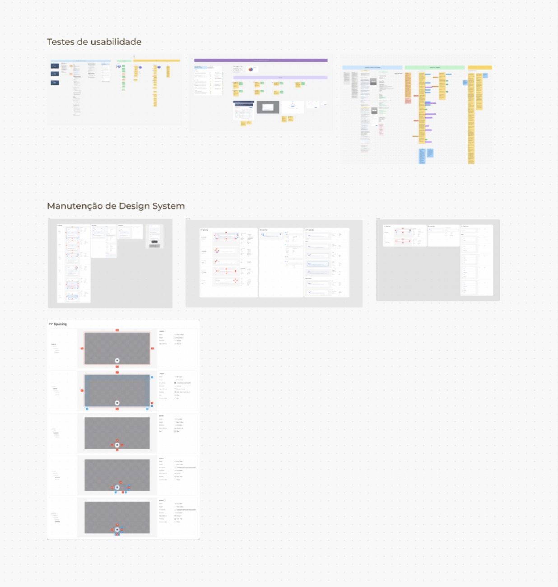

Dois avisos, um só componente
O aviso de cotas incompletas usava o mesmo padrão visual do aviso de dados faltando, e passava despercebido pelo cliente.
Decisão: diferenciar visualmente os dois estados.
A corretora concentrava as principais interações do cliente numa plataforma digital: onboarding PF e PJ, gestão de documentos, acompanhamento de operações de câmbio, solicitações de cartão pré-pago e câmbio turismo, além de um painel administrativo interno.

Atuei como Product Designer no Grupo Advanced, contribuindo simultaneamente em múltiplas frentes do produto:
Por que esse produto importa: um sistema de câmbio digital lida com decisões financeiras e documentos sensíveis do cliente, um contexto em que confusão gera perda de confiança na hora. As decisões de fluxo e interface precisavam equilibrar clareza para quem usa com as regras de compliance da corretora, sem transformar isso num processo burocrático demais para o cliente terminar.
Decisões de UI e UX
Pessoa física e pessoa jurídica pedem documentos e etapas diferentes. Separar os fluxos desde o início evitou um formulário genérico com campos que não faziam sentido pra metade dos clientes.
Autenticação em duas etapas é obrigatória num produto financeiro. O desafio foi encaixar isso sem parecer um obstáculo extra, reduzindo o número de telas até o cliente estar autenticado.
Discovery e wireflows
Antes de desenhar qualquer tela, mapeei como corretoras e fintechs referências resolviam onboarding e cotação, documentei as funcionalidades e regras de negócio levantadas com o time e alinhei prioridades em reuniões de discovery.


Telas de alta fidelidade
As telas finais do onboarding PJ, já com as decisões de fluxo e conteúdo validadas no discovery.


Antes e depois
Nos dois pontos onde a mudança foi mais visível, arraste o controle pra comparar o fluxo antigo com o redesenhado.

Dados da empresa

Sócios e representantes
Teste de usabilidade: condução e insights
Conduzi esse teste de usabilidade: planejei o roteiro de tarefas, moderei as três entrevistas, registrei os insights em tempo real e apresentei os resultados priorizados para o time do projeto.
Insight → decisão
O aviso de cotas incompletas usava o mesmo padrão visual do aviso de dados faltando, e passava despercebido pelo cliente.
Decisão: diferenciar visualmente os dois estados.
Sem separação clara entre os dois códigos, os clientes erravam o preenchimento.
Decisão: campo dividido em seletor de DDI + DDD digitável.
Por falta de sinalização sobre o que era obrigatório (FACTA opcional, LGPD e Termo de adesão obrigatórios), os clientes marcavam os três como se fossem iguais.
Decisão: revisão da sinalização de obrigatoriedade.
Os clientes tentavam voltar pelo mesmo link recebido por e-mail, sem saber que os dados ficavam salvos.
Decisão: aviso de saída explicando o prazo de retenção dos dados e um caminho de acesso via login.
Câmbio, cartão pré-pago, câmbio turismo e remessa têm regras de negócio próprias, mas precisavam conviver num único painel do cliente, sem cada operação parecer um produto diferente.
Decisões de UI e UX
Câmbio, cartão pré-pago e câmbio turismo usam os mesmos componentes de card, status e ação. Assim o cliente reconhece o padrão mesmo trocando de tipo de operação.
Com várias frentes rodando em paralelo, manter os componentes documentados e atualizados evitava que cada tela nova reinventasse um padrão que já tinha sido resolvido antes.

O app foi desenvolvido como um projeto conceitual para posicionar a marca no segmento de investimentos digitais, cobrindo a jornada completa do usuário: acesso, aplicação e acompanhamento de rendimentos.
*Por questões de confidencialidade, entre em contato para saber detalhes do projeto.

Por que esse problema importa: investir é uma decisão que passa por confiança antes de passar por interface. Um app que parece confuso ou genérico afasta o usuário antes dele testar o produto de verdade, então o benchmark de mercado guiou boa parte das decisões visuais e de fluxo desde o início.
Processo: pesquisa de mercado e benchmark de players do setor, exploração de alternativas de interface e wireframes até chegar às telas finais.
Decisões de UI e UX
Antes de qualquer tela, mapeei como os principais apps do mercado resolviam onboarding, extrato e carteira, pra entender o que já era esperado pelo usuário e onde dava pra diferenciar a marca.
Usei IA como apoio na geração de variações em alta fidelidade, mas cada direção final passou por validação e aprovação com a liderança, mantendo o critério de design nas decisões importantes.
Do primeiro acesso ao acompanhamento de rendimentos, cada etapa foi pensada como parte de uma jornada única, pra garantir que o usuário sempre soubesse onde estava e o que vinha a seguir.
Por ser conceitual, o app foi desenhado pra servir de referência estratégica para iniciativas futuras do grupo. Documentação e consistência pesaram tanto quanto a interface em si.
Pesquisa e exploração de interface